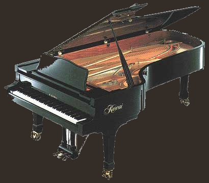

Դաշնամուր
 Երաժշտական ստեղնաշարային գործիք ՝ դաշնամուրի սորտերից մեկը: Մեծ դաշնամուրում լարերը, ձայնային տախտակները և մեխանիկական մասը դասավորված են հորիզոնական, այս պայմանավորվածության շնորհիվ այն ունի թևանման ձև և ավելի մեծ է, քան դաշնամուրը: Այնուամենայնիվ, դաշնամուրը ավելի լավ ու բարձր է հնչում, քան դաշնամուրը:
«Դաշնամուր» տերմինը ռուսերեն լեզվով հայտնվեց 19-րդ դարի կեսերին (ֆրանսիական արքայական - «արքայական»): Նույն տիպի գործիքները, որոնք ավելի վաղ պատրաստվել էին Ռուսաստանում, կոչվում էին «դաշնամուր» կամ «թև» (աղավաղված գերմանական ֆլուգել - «թև»): Գերմանիայում այսպիսի վաղ գործիքները կոչվում էին «մուրճի կլավիեր», իսկ ավելի ուշ ՝ գունդ: 18-րդ և 19-րդ դարերի սկզբների կառույցների հնատիպ տիպի կառույցների թևավոր դաշնամուրները ռուսական տերմինաբանության տեսանկյունից չեն կարող կոչվել մեծ դաշնամուր: Դաշնամուրը դաշնամուրի ամենակատարյալ և երաժշտականորեն արտահայտիչ տեսակն է:
Դաշնամուրը բաղկացած է մարմնից, որի մեջ մետաղական լարերը ձգվում են ռեզոնանսային հնչող տախտակի վրա, երբ ստեղները սեղմվում են, մուրճերը շարժվում են և հարվածում են լարերին: Օգտագործելով երկու ոտնակ ՝ կարող եք ուժեղացնել (աջից) կամ թուլացնել (ձախից) ձայնը (նշեք, որ ձախ ոտնակն օգտագործվում է ոչ այնքան թուլացնելու, այլ նվագելու ընթացքում ձայնի գույնը փոխելու համար ՝ դրանով իսկ ստեղծելով լրացուցիչ նրբերանգներ): Դաշնամուրի մեխանիկան օգտագործում է բնական ծանրություն, ինչը ձայնի արտադրությունն ավելի զգայուն է դարձնում (ի տարբերություն դաշնամուրի): Ռոյալի դաշնամուրի ձայնային տիրույթը 88 տոննա է (7 և 1/4 օկտավաներ): Հաճախականության միջակայքը վայրկյանում 27.5 («լա» ենթակոնտոկատից) մինչև 4185.6 («հինգերորդ օկտավա») թրթռում է:
Անցյալի ամենահարգված կոմպոզիտորները, այդ թվում ՝ Ֆրանց Լիստը, iaակոմո Պուչինին, Ռիչարդ Վագները, Սերգեյ Ռախմանինովը, Իգոր Ստրավինսկին, Արթուր Ռուբինշտեյնը, Georgeորջ Գերշվինը, Դյուկ Էլլինգտոնը և շատ ուրիշներ, վիրտուոզ դաշնակահարներ էին: Այս մեծ վարպետների գնահատականներն այժմ ազատ են հասարակության համար, և դաշնամուրի միավորները կարող եք անվճար ներբեռնել բազմաթիվ մասնագիտացված առցանց ռեսուրսներից:
Դաշնամուրի Կազմվածքը:
Ապագան դաշնամուրի հիմնական օժանդակ միավորն է, չուգունի շրջանակի հետ միասին, կրելով բոլոր լարերի լարվածության բեռը: Մարմնի մասերն ու հավաքույթները կցված են ստորոտի զանգվածային փայտե շրջանակին: Դաշնամուրի չուգունի շրջանակը երկաթև և լայնակի ամրացմամբ բարդ վանդակավոր կառուցվածքի մի կտոր չուգունի ձուլում է, որը ամրացված է գործիքի փայտե մարմնում և նախատեսված է լարերի ընդհանուր լարվածությունը վերցնելու համար: Առջեւի մասում շրջանակն ունի շեմեր կամ հատուկ ագրաֆորային պտուտակներ, որոնք ծառայում են լարերի հնչող հատվածների երկարության սահմանափակմանը: Պողպատե ցցերը կամ հետևի քորոցները մուրճով ընկնում են շրջանակի հետևի մասում, որի համար լարերը մանգաղված են ականջներով կամ օղակներով: Agraf- ը փողային և թամբերով փողային բարդ պտուտակ է, որը նախատեսված է դիրքը ամրացնելու և երգչախմբային լարերի բարձրորակ կտրումը ապահովելու համար: Forbaum- ը դաշնամուրի մարմնի առջևի մասի մանրամասնություն է, որը ծածկում է չուգունի շրջանակի և պտուտակապի առջևի մասը: Virbelbank- ը փոսերով բազմաշերտ տախտակ է, որի մեջ սեղմում են քորոցները ՝ ձգելով դաշնամուրի լարերը (ժամանակի ընթացքում ծառը դադարում է սերտորեն ծածկել քորոցները, և գործիքը վրդովվում է): Fusklets - դաշնամուրի ոտքը կցելու աջակցության ձող: Capo - մետաղական պատկերավոր ժապավեն, որը լարերի միջով սեղմում է լարային բշտիկին եռապատկման մատյանում; պտուտակված է քորոցին և լարերի թրթռացող հատվածների սահմաններից մեկն է: Կարապասը չուգունի դաշնամուրի շրջանակի ամուր սալ է, որը ծածկում է պտղունց ափը: Այս մանրամասնությունը բնութագրվում է խաչմերուկի շրջանակին, այն տանում է լարային լարվածության զգալի մասը (մոտ 2,5 տոննա), քանի որ յուրաքանչյուր քորակի համար սալաքարում նախատեսված է թևով անցք, որը բեռնաթափում է քորոցի ամուր փայտը: Շրջանակի այս դիզայնը բնորոշ է բոլոր ժամանակակից մեծ դաշնամուրներին: Շրջանակի եւս երկու տեսակ կա `ոչ զրահապատ, որի սալը շարունակական չէ (դրա մեջ պատուհաններ են պատրաստում փոսերի փոխարեն, և պինդ զանգվածը ներքևից պտուտակված փին-բանկ է կազմում) և կիսակառույց , որի ափսեը բացակայում է որպես չուգունի վերջ, և դրա գործառույթն իրականացվում է պտուտակներով պտուտակով պտուտակավորված բանկով և երկու կողմից սոսնձված դաշնամուրի մարմնում, և դիրքում պահվում է կողիկներով շրջանակի բուն: Հեշտ է տեսնել, որ վերջին երկու տիպի շրջանակները պակաս դիմացկուն են, հատկապես `կիսակառույցը, չնայած որ մինչև հարյուր տարվա հնություն ունեցող նման բարձրորակ հնաոճ իրերի մեծ դաշնամուրներ բավականին արդյունավետ են: Բացի այդ, հին ուղղաձիգ դաշնամուրների վրա չկար շրջանակ ՝ որպես ինքնուրույն բաղադրիչ, դրա գործառույթն իրականացնում էին դաշնամուրի մարմինը և ոտքը, և այս ամենին աջակցում էին չուգուն ճառագայթները ՝ լարերը, ներկայիս շրջանակի նախատիպը տարածող Ստուլը զանգվածային շրջանակ է, որը պտուտակված է մարմնի ջրամբարներում և ծառայում է որպես հիմք դաշնամուրի մուրճի գործողության համար: Spire- ը փայտի կամ չուգունի շրջանակ է, որը բեռներ է տանում լարերի լարվածությունից: Լարերի ապակեպատման հատիկը չուգունի շրջանակի անխռով պատի վրա տրված ձուլված ընկույզ է, որի վրա յուրաքանչյուր լար բաժանված է ակտիվ և ոչ աշխատանքային մասերի, ծառայում է լարերի հնչող աշխատանքային մասը կտրելու համար: Նախկինում փոխարենը օգտագործվում էին թևի պտուտակներ հիշեցնող ագրաֆորային պտուտակներ: Նրանց գլուխներն ունեն անցքեր, որոնց միջով անցնում են լարերը, և այդ անցքերը կատարում են նույն գործառույթը, ինչ ընկույզը: Գծապատկերները փոխարինվում են ապակեպատման ուլունքներով, քանի որ դրանք աշխատատար են արտադրության և տեղադրման մեջ, ներառյալ լարերը փոխելիս, մինչ ապակեպատման հատիկները ձուլվում են շրջանակի հետ միասին:
Անցած 100 տարիների ընթացքում մեծ դաշնամուրների նախագծման մեջ հիմնովին նոր բան չի ստեղծվել: Ժամանակակից արտադրողների «նորարարությունները» կրկնում են նախորդ դարերի փորձերը ՝ ավելի շատ ազդելով գնորդների հոգեբանության վրա, քան գործիքների որակի վրա: Ժամանակակից դաշնամուրների կառուցվածքներում և մեխանիզմներում սինթետիկ նյութերի օգտագործումը նպատակաուղղված է արտադրության գնի նվազեցմանը (պարզեցմանը).